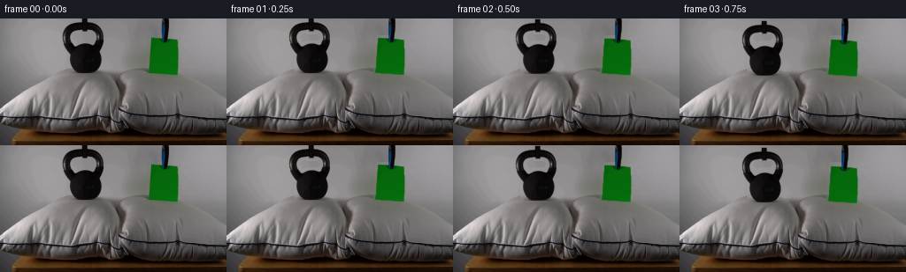
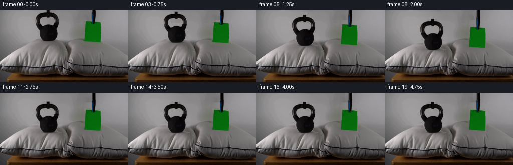
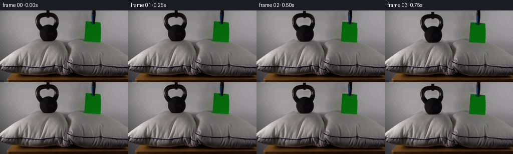

CODING AGENTS AS PIXEL WORLD MODELS
traex/GPT-5.6-Sol · 0194
点击播放 · 原生 RGB 像素
逐轮保存的候选
回放视频、检查图与代码变化。
每份候选均可单独播放。实际图片检查记录在下方工具轨迹中。
候选 01播放与检查图
点击播放 · 原生 RGB 像素

展开代码变化
--- 上一保存版本
+++ 本次保存版本
@@ -0,0 +1,189 @@
+from pathlib import Path
+import numpy as np
+import cv2
+from PIL import Image
+import artifact_io
+
+# PixelWorld case 0194: analytic 2-D continuation of the supplied camera frame.
+ROOT = Path(__file__).resolve().parent
+src = np.asarray(Image.open(ROOT / "first_frame.png").convert("RGB"), dtype=np.uint8)
+H, W = src.shape[:2]
+
+def smoothstep(x):
+ x = np.clip(x, 0.0, 1.0)
+ return x*x*(3.0 - 2.0*x)
+
+def component_from(mask, seed_xy):
+ n, labels, stats, _ = cv2.connectedComponentsWithStats(mask.astype(np.uint8), 8)
+ x, y = seed_xy
+ k = labels[y, x]
+ if k == 0:
+ # Defensive fallback to the largest non-background component.
+ k = 1 + int(np.argmax(stats[1:, cv2.CC_STAT_AREA]))
+ return labels == k
+
+# --- Recover mattes for the two foreground specimens -------------------------
+gray = cv2.cvtColor(src, cv2.COLOR_RGB2GRAY)
+
+# Kettlebell: its near-black paint separates cleanly from the neutral backdrop.
+# Limit the connected threshold spatially so that the dark table below cannot
+# become connected to the bottom of the bell.
+bell_candidate = np.zeros((H, W), bool)
+bell_candidate[:63, 68:123] = gray[:63, 68:123] < 122
+bell_hard = component_from(bell_candidate, (95, 40))
+# The contact/base pixels are a tiny separate antialiased island in some PNGs.
+bell_hard[58:63, 84:110] |= gray[58:63, 84:110] < 105
+bell_hard = cv2.morphologyEx(bell_hard.astype(np.uint8), cv2.MORPH_CLOSE,
+ np.ones((3,3), np.uint8)).astype(bool)
+# One-pixel soft matte retains the original antialiasing at 256x144.
+bell_alpha = cv2.GaussianBlur(bell_hard.astype(np.float32), (0,0), 0.62)
+bell_alpha = np.clip(bell_alpha, 0, 1)
+
+# Green paper plus its narrow blue-black suspension/placement strip at top.
+R, G, B = [src[..., k].astype(np.float32) for k in range(3)]
+green = (G > 1.38*R) & (G > 1.38*B) & (G > 42)
+paper_hard = component_from(green, (185, 43))
+stem = np.zeros((H, W), bool)
+stem[:29, 181:193] = ((gray[:29,181:193] < 92) |
+ (B[:29,181:193] > 1.25*G[:29,181:193]))
+# Keep only the central narrow strip; do not capture wall texture.
+stem[:, :182] = False; stem[:, 192:] = False
+paper_hard |= stem
+paper_hard = cv2.morphologyEx(paper_hard.astype(np.uint8), cv2.MORPH_CLOSE,
+ np.ones((3,3), np.uint8)).astype(bool)
+paper_alpha = cv2.GaussianBlur(paper_hard.astype(np.float32), (0,0), 0.55)
+paper_alpha = np.clip(paper_alpha, 0, 1)
+
+# Clean plate. Telea inpainting is used only as a local photographic patch;
+# the large-scale fabric and wall gradients are subsequently restored by row
+# interpolation to avoid inpaint swirls.
+remove = ((bell_alpha > .025) | (paper_alpha > .025)).astype(np.uint8)
+remove = cv2.dilate(remove, np.ones((5,5),np.uint8), iterations=1) * 255
+plate = cv2.inpaint(src, remove, 5, cv2.INPAINT_TELEA)
+
+# A gentle row-wise clean fill gives stable wall tone in regions uncovered by
+# downward motion. It retains fine grain from neighboring source pixels.
+def row_fill(image, mask, x0, x1, y0, y1):
+ out = image.astype(np.float32).copy()
+ for y in range(y0, y1):
+ xs = np.where(mask[y, x0:x1] > 0)[0]
+ if not len(xs):
+ continue
+ a, b = x0 + xs.min(), x0 + xs.max()
+ L = src[y, max(0,a-8):max(1,a-2)].astype(np.float32)
+ Rt = src[y, min(W-1,b+3):min(W,b+9)].astype(np.float32)
+ lv = L.mean(0) if len(L) else src[y,max(a-1,0)].astype(np.float32)
+ rv = Rt.mean(0) if len(Rt) else src[y,min(b+1,W-1)].astype(np.float32)
+ for x in range(a, b+1):
+ if mask[y,x]:
+ q = (x-a+1)/(b-a+2)
+ base = lv*(1-q)+rv*q
+ # deterministic camera-grain sample from a nearby clear strip
+ sx = max(0, min(W-1, a-12 + ((x-a) % 7)))
+ noise = src[y,sx].astype(np.float32) - src[y,max(0,min(W-1,sx+2))].astype(np.float32)
+ out[y,x] = np.clip(base + .12*noise, 0, 255)
+ return out.astype(np.uint8)
+
+# Use the stable row fill on the wall only. Fabric below y=55 is better handled
+# by texture-aware OpenCV inpainting and the deformation warp.
+plate = row_fill(plate, remove > 0, 63, 126, 0, 56)
+plate = row_fill(plate, remove > 0, 160, 211, 0, 56)
+
+Y, X = np.mgrid[0:H, 0:W].astype(np.float32)
+
+def add_shadow(frame, cx, cy, rx, ry, opacity):
+ """Soft multiply shadow that grows as an object approaches its pillow."""
+ if opacity <= 0: return frame
+ d = ((X-cx)/rx)**2 + ((Y-cy)/ry)**2
+ a = np.exp(-2.45*d) * opacity
+ a *= (d < 2.7)
+ return np.clip(frame.astype(np.float32) * (1.0-a[...,None]), 0, 255).astype(np.uint8)
+
+def left_pillow_deformed(base, amount):
+ """Compress the left pillow under a 30-lb load, conserving side volume."""
+ if amount <= .001:
+ return base.copy()
+ # A broad central dent strongest at the upper pillow surface, decaying to
+ # zero at the table edge. Tiny negative side lobes mimic displaced filling.
+ center = np.exp(-0.5*((X-96.0)/25.0)**2)
+ side = (np.exp(-0.5*((X-54.0)/15.0)**2) +
+ np.exp(-0.5*((X-137.0)/15.0)**2))
+ vertical = np.clip((116.0-Y)/59.0, 0.0, 1.0)
+ disp = amount * vertical * (center - 0.10*side)
+ # Inverse-map: positive displacement moves source fabric downward.
+ map_y = Y - disp
+ map_x = X + 0.045*disp*(X-96.0)/25.0
+ warped = cv2.remap(base, map_x.astype(np.float32), map_y.astype(np.float32),
+ cv2.INTER_CUBIC, borderMode=cv2.BORDER_REFLECT_101)
+ # Confine the warp to the left pillow, with soft boundaries.
+ region = np.clip((Y-52.0)/10.0,0,1) * np.clip((121.0-Y)/10.0,0,1)
+ region *= np.clip((151.0-X)/18.0,0,1)
+ region *= np.clip((X+8.0)/16.0,0,1)
+ region = cv2.GaussianBlur(region.astype(np.float32),(0,0),1.2)
+ out = base.astype(np.float32)*(1-region[...,None]) + warped.astype(np.float32)*region[...,None]
+ return np.clip(out,0,255).astype(np.uint8)
+
+def translated_layer(rgb, alpha, dx, dy):
+ M = np.array([[1,0,dx],[0,1,dy]], np.float32)
+ col = cv2.warpAffine(rgb, M, (W,H), flags=cv2.INTER_CUBIC,
+ borderMode=cv2.BORDER_CONSTANT, borderValue=(0,0,0))
+ a = cv2.warpAffine(alpha, M, (W,H), flags=cv2.INTER_LINEAR,
+ borderMode=cv2.BORDER_CONSTANT, borderValue=0)
+ return col, np.clip(a,0,1)
+
+def composite(base, layer, alpha):
+ a = alpha[...,None].astype(np.float32)
+ return np.clip(base.astype(np.float32)*(1-a)+layer.astype(np.float32)*a,0,255).astype(np.uint8)
+
+frames = []
+for i in range(20):
+ if i == 0:
+ frames.append(src.copy())
+ continue
+
+ # Half-second poised start, then both objects are lowered together over
+ # roughly two seconds. A short, damped settling phase follows contact.
+ u = smoothstep((i-1.0)/8.0)
+ settle = 0.0
+ if i >= 10:
+ settle = 1.3*np.exp(-0.72*(i-10))*np.sin((i-10)*2.35)
+ bell_y = 18.0*u + settle
+ paper_y = 12.0*u + 0.22*settle
+
+ # Pillow begins yielding only in the latter part of the lowering motion.
+ contact = smoothstep((u-0.30)/0.70)
+ compression = max(0.0, 14.0*contact + 0.58*settle)
+ frame = left_pillow_deformed(plate, compression)
+
+ # Contact shadows: broad and substantial beneath the iron bell; extremely
+ # light beneath the paper so that its pillow remains essentially unchanged.
+ frame = add_shadow(frame, 96, 73 + 0.33*compression, 29, 5.0,
+ 0.19*contact)
+ frame = add_shadow(frame, 185, 69 + 0.12*paper_y, 20, 2.7,
+ 0.055*contact)
+
+ bell_layer, ba = translated_layer(src, bell_alpha, 0.0, bell_y)
+ frame = composite(frame, bell_layer, ba)
+
+ paper_layer, pa = translated_layer(src, paper_alpha, 0.0, paper_y)
+ frame = composite(frame, paper_layer, pa)
+
+ # The slim placement strip enters from above as the paper is lowered. This
+ # closes the top-frame gap without inventing a hand or an extra object.
+ ext = int(np.ceil(max(0.0,paper_y)))
+ if ext:
+ strip_a = paper_alpha[0:1].copy()
+ strip_c = src[0:1].copy()
+ for yy in range(min(ext,H)):
+ # only the narrow original top strip, with unchanged camera texture
+ arow = strip_a[0]
+ frame[yy] = np.clip(frame[yy].astype(np.float32)*(1-arow[:,None]) +
+ strip_c[0].astype(np.float32)*arow[:,None],0,255).astype(np.uint8)
+
+ frames.append(frame)
+
+frames = np.stack(frames).astype(np.uint8)
+# Contract-critical identity check before serialization.
+assert frames.shape == (20,144,256,3)
+assert np.array_equal(frames[0], src)
+artifact_io.save(frames, ROOT)
候选 02播放与检查图
点击播放 · 原生 RGB 像素


展开代码变化
--- 上一保存版本
+++ 本次保存版本
@@ -137,7 +137,9 @@
frames = []
for i in range(20):
- if i == 0:
+ if i <= 1:
+ # Hold the exact supplied frame briefly; this also prevents any matte
+ # reconstruction from appearing as a pre-motion flicker.
frames.append(src.copy())
continue
@@ -145,8 +147,8 @@
# roughly two seconds. A short, damped settling phase follows contact.
u = smoothstep((i-1.0)/8.0)
settle = 0.0
- if i >= 10:
- settle = 1.3*np.exp(-0.72*(i-10))*np.sin((i-10)*2.35)
+ if i >= 9:
+ settle = 1.3*np.exp(-0.72*(i-9))*np.sin((i-9)*2.35)
bell_y = 18.0*u + settle
paper_y = 12.0*u + 0.22*settle
可观测工具轨迹
实际执行的命令与返回图片。
命令 1exit 0
/bin/bash -lc "cat GENERATION_RULES.md && printf '\\n--- PROMPT ---\\n' && cat prompt.txt"
命令 2exit 1
/bin/bash -lc "find . -maxdepth 2 -type f -printf '%p\\n' | sort && printf '\\n--- TOOLS ---\\n' && command -v ffmpeg && command -v ffprobe && python3 - <<'PY'
from PIL import Image
im=Image.open('first_frame.png')
print('first_frame',im.mode,im.size)
PY"命令 3exit 0
/bin/bash -lc "python3 - <<'PY'
from PIL import Image
import numpy as np
im=np.asarray(Image.open('first_frame.png').convert('RGB'))
print(im.shape, im.dtype, im.min((0,1)), im.max((0,1)), im.mean((0,1)).round(1), im.std((0,1)).round(1))
# common quantized colors
q=(im//16)*16+8
u,c=np.unique(q.reshape(-1,3),axis=0,return_counts=True)
for i in np.argsort(c)[-30:][::-1]: print(c[i],u[i])
# grid samples every 12 px
for y in range(6,144,12):
print(y, ['%02x%02x%02x'%tuple(im[y,x]) for x in range(8,256,16)])
PY"命令 4exit 0
/bin/bash -lc "python3 - <<'PY'
import cv2, numpy as np
from PIL import Image
im=cv2.imread('first_frame.png'); rgb=im[:,:,::-1]
# components masks
masks={
'green':(rgb[:,:,1]>rgb[:,:,0]*1.6)&(rgb[:,:,1]>rgb[:,:,2]*1.6)&(rgb[:,:,1]>45),
'dark':rgb.mean(2)<45,
'bright':rgb.mean(2)>175,
'brown':(rgb[:,:,0]>rgb[:,:,1]*1.25)&(rgb[:,:,1]>rgb[:,:,2]*1.1)&(rgb[:,:,0]>45),
'neutral':(rgb.max(2)-rgb.min(2)<10)
}
for n,m in masks.items():
num,lab,stats,cent=cv2.connectedComponentsWithStats(m.astype('uint8'),8)
print('\\n',n,'total',m.sum())
for i in np.argsort(stats[1:,4])[::-1][:15]+1:
if stats[i,4]>=3: print(' ',stats[i].tolist(),cent[i].round(1).tolist())
# ascii classifications each 4x4 based dominant class / avg
print('\\nASCII 4x4 blocks')
for yy in range(0,144,4):
s=''
for xx in range(0,256,4):
b=rgb[yy:yy+4,xx:xx+4]; R,G,B=b.mean((0,1)); v=(R+G+B)/3
if G>1.5*R and G>1.5*B and G>40:c='G'
elif R>1.25*G and G>1.1*B and R>45:c='b'
elif v<25:c='#'
elif v<45:c='@'
elif v<65:c='o'
elif v<90:c='x'
elif v<120:c='-'
elif v<150:c='+'
elif v<175:c='.'
else:c=' '
s+=c
print(f'{yy:03d} {s}')
PY"命令 5exit 0
/bin/bash -lc "python3 - <<'PY'
from PIL import Image
import numpy as np
im=np.asarray(Image.open('first_frame.png').convert('RGB'))
# print per row runs for dark, green, bright from x 50+
for y in range(0,115,2):
p=im[y]; dark=p.mean(1)<50; green=(p[:,1]>1.5*p[:,0])&(p[:,1]>1.5*p[:,2])&(p[:,1]>40); bright=p.mean(1)>175
def runs(m):
d=np.diff(np.r_[False,m,False].astype(int)); st=np.where(d==1)[0]; en=np.where(d==-1)[0]-1
return ','.join(f'{a}-{b}' for a,b in zip(st,en) if b-a>=1)
print(f'{y:3} D[{runs(dark)}] G[{runs(green)}] W[{runs(bright)}]')
PY"命令 6exit 0
/bin/bash -lc "python3 - <<'PY'
from PIL import Image
import numpy as np, cv2
im=np.asarray(Image.open('first_frame.png').convert('RGB'))
# region means per 16x8
for y in range(0,144,8):
print(f'y{y:03}',end=' ')
for x in range(0,256,16):
a=im[y:y+8,x:x+16]; m=a.mean((0,1)); print('%3d'%m.mean(),end=' ')
print()
# RGB stats/ranges selected bounding boxes
for name,(x0,y0,x1,y1) in {'bell':(65,0,122,65),'paper':(160,0,208,65),'lpillow':(0,62,127,112),'rpillow':(128,62,256,112),'bottom':(0,112,256,144)}.items():
a=im[y0:y1,x0:x1]; print(name, a.mean((0,1)),a.std((0,1)),a.min((0,1)),a.max((0,1)))
# sobel edge sums per rows/cols
g=cv2.cvtColor(im,cv2.COLOR_RGB2GRAY); e=cv2.Canny(g,30,80)
print('edge rows',[(i,int(e[i].sum()/255)) for i in range(144) if e[i].sum()/255>50])
print('edge cols top', sorted(enumerate((e[:112]>0).sum(0)), key=lambda z:z[1],reverse=True)[:20])
PY"命令 7exit 0
/bin/bash -lc 'cat artifact_io.py'
命令 8exit 0
/bin/bash -lc "python3 - <<'PY'
from PIL import Image
import numpy as np
im=np.array(Image.open('first_frame.png').convert('RGB'))
for x in [70,74,78,82,88,94,100,106,112,116,120,164,168,172,176,180,184,188,192,196,200,204]:
print('\\nx',x)
for y in range(0,68,4): print(f'{y}:{tuple(im[y,x])}',end=' ')
print()
PY"命令 9exit 0
/bin/bash -lc "python3 - <<'PY'
from PIL import Image
import numpy as np
im=np.array(Image.open('first_frame.png').convert('RGB'))
def show(x0,y0,x1,y1,scale=1):
a=im[y0:y1,x0:x1]
for y in range(0,len(a),scale):
s=''
for x in range(0,a.shape[1],scale):
p=a[y:y+scale,x:x+scale].mean((0,1)); v=p.mean()
if p[1]>1.45*p[0] and p[1]>1.45*p[2] and p[1]>40:c='G'
elif p[2]>1.5*p[0] and p[2]>1.25*p[1] and p[2]>30:c='B'
elif v<15:c='#'
elif v<30:c='@'
elif v<50:c='o'
elif v<80:c='x'
elif v<110:c='-'
elif v<135:c='+'
elif v<150:c='.'
else:c=' '
s+=c
print(s)
print('BELL')
show(65,0,125,66,2)
print('PAPER')
show(155,0,214,68,1)
PY"命令 10exit 0
/bin/bash -lc "python3 - <<'PY'
import numpy as np
from PIL import Image
im=np.array(Image.open('first_frame.png').convert('RGB'));R,G,B=im.transpose(2,0,1);m=(G>1.35*R)&(G>1.35*B)&(G>40)
for y in range(15,66):
xs=np.where(m[y])[0]
if len(xs): print(y,xs.min(),xs.max(),len(xs),[(a,b) for a,b in zip(np.where(np.diff(np.r_[False,m[y],False])==1)[0],np.where(np.diff(np.r_[False,m[y],False])==-1)[0]-1)])
PY"命令 11exit 0
/bin/bash -lc "python3 - <<'PY'
import cv2,numpy as np
im=cv2.imread('first_frame.png');g=cv2.cvtColor(im,cv2.COLOR_BGR2GRAY)
for th in [60,80,100,115,125,135]:
m=np.zeros_like(g,np.uint8); m[:64,65:125]=(g[:64,65:125]<th)
n,l,s,c=cv2.connectedComponentsWithStats(m,8)
# component seed 95,40
k=l[40,95]; print(th,k,s[k].tolist(), 'size')
PY"命令 12exit 0
/bin/bash -lc "cat > generate.py <<'PY'
from pathlib import Path
import numpy as np
import cv2
from PIL import Image
import artifact_io
# PixelWorld case 0194: analytic 2-D continuation of the supplied camera frame.
ROOT = Path(__file__).resolve().parent
src = np.asarray(Image.open(ROOT / \"first_frame.png\").convert(\"RGB\"), dtype=np.uint8)
H, W = src.shape[:2]
def smoothstep(x):
x = np.clip(x, 0.0, 1.0)
return x*x*(3.0 - 2.0*x)
def component_from(mask, seed_xy):
n, labels, stats, _ = cv2.connectedComponentsWithStats(mask.astype(np.uint8), 8)
x, y = seed_xy
k = labels[y, x]
if k == 0:
# Defensive fallback to the largest non-background component.
k = 1 + int(np.argmax(stats[1:, cv2.CC_STAT_AREA]))
return labels == k
# --- Recover mattes for the two foreground specimens -------------------------
gray = cv2.cvtColor(src, cv2.COLOR_RGB2GRAY)
# Kettlebell: its near-black paint separates cleanly from the neutral backdrop.
# Limit the connected threshold spatially so that the dark table below cannot
# become connected to the bottom of the bell.
bell_candidate = np.zeros((H, W), bool)
bell_candidate[:63, 68:123] = gray[:63, 68:123] < 122
bell_hard = component_from(bell_candidate, (95, 40))
# The contact/base pixels are a tiny separate antialiased island in some PNGs.
bell_hard[58:63, 84:110] |= gray[58:63, 84:110] < 105
bell_hard = cv2.morphologyEx(bell_hard.astype(np.uint8), cv2.MORPH_CLOSE,
np.ones((3,3), np.uint8)).astype(bool)
# One-pixel soft matte retains the original antialiasing at 256x144.
bell_alpha = cv2.GaussianBlur(bell_hard.astype(np.float32), (0,0), 0.62)
bell_alpha = np.clip(bell_alpha, 0, 1)
# Green paper plus its narrow blue-black suspension/placement strip at top.
R, G, B = [src[..., k].astype(np.float32) for k in range(3)]
green = (G > 1.38*R) & (G > 1.38*B) & (G > 42)
paper_hard = component_from(green, (185, 43))
stem = np.zeros((H, W), bool)
stem[:29, 181:193] = ((gray[:29,181:193] < 92) |
(B[:29,181:193] > 1.25*G[:29,181:193]))
# Keep only the central narrow strip; do not capture wall texture.
stem[:, :182] = False; stem[:, 192:] = False
paper_hard |= stem
paper_hard = cv2.morphologyEx(paper_hard.astype(np.uint8), cv2.MORPH_CLOSE,
np.ones((3,3), np.uint8)).astype(bool)
paper_alpha = cv2.GaussianBlur(paper_hard.astype(np.float32), (0,0), 0.55)
paper_alpha = np.clip(paper_alpha, 0, 1)
# Clean plate. Telea inpainting is used only as a local photographic patch;
# the large-scale fabric and wall gradients are subsequently restored by row
# interpolation to avoid inpaint swirls.
remove = ((bell_alpha > .025) | (paper_alpha > .025)).astype(np.uint8)
remove = cv2.dilate(remove, np.ones((5,5),np.uint8), iterations=1) * 255
plate = cv2.inpaint(src, remove, 5, cv2.INPAINT_TELEA)
# A gentle row-wise clean fill gives stable wall tone in regions uncovered by
# downward motion. It retains fine grain from neighboring source pixels.
def row_fill(image, mask, x0, x1, y0, y1):
out = image.astype(np.float32).copy()
for y in range(y0, y1):
xs = np.where(mask[y, x0:x1] > 0)[0]
if not len(xs):
continue
a, b = x0 + xs.min(), x0 + xs.max()
L = src[y, max(0,a-8):max(1,a-2)].astype(np.float32)
Rt = src[y, min(W-1,b+3):min(W,b+9)].astype(np.float32)
lv = L.mean(0) if len(L) else src[y,max(a-1,0)].astype(np.float32)
rv = Rt.mean(0) if len(Rt) else src[y,min(b+1,W-1)].astype(np.float32)
for x in range(a, b+1):
if mask[y,x]:
q = (x-a+1)/(b-a+2)
base = lv*(1-q)+rv*q
# deterministic camera-grain sample from a nearby clear strip
sx = max(0, min(W-1, a-12 + ((x-a) % 7)))
noise = src[y,sx].astype(np.float32) - src[y,max(0,min(W-1,sx+2))].astype(np.float32)
out[y,x] = np.clip(base + .12*noise, 0, 255)
return out.astype(np.uint8)
# Use the stable row fill on the wall only. Fabric below y=55 is better handled
# by texture-aware OpenCV inpainting and the deformation warp.
plate = row_fill(plate, remove > 0, 63, 126, 0, 56)
plate = row_fill(plate, remove > 0, 160, 211, 0, 56)
Y, X = np.mgrid[0:H, 0:W].astype(np.float32)
def add_shadow(frame, cx, cy, rx, ry, opacity):
\"\"\"Soft multiply shadow that grows as an object approaches its pillow.\"\"\"
if opacity <= 0: return frame
d = ((X-cx)/rx)**2 + ((Y-cy)/ry)**2
a = np.exp(-2.45*d) * opacity
a *= (d < 2.7)
return np.clip(frame.astype(np.float32) * (1.0-a[...,None]), 0, 255).astype(np.uint8)
def left_pillow_deformed(base, amount):
\"\"\"Compress the left pillow under a 30-lb load, conserving side volume.\"\"\"
if amount <= .001:
return base.copy()
# A broad central dent strongest at the upper pillow surface, decaying to
# zero at the table edge. Tiny negative side lobes mimic displaced filling.
center = np.exp(-0.5*((X-96.0)/25.0)**2)
side = (np.exp(-0.5*((X-54.0)/15.0)**2) +
np.exp(-0.5*((X-137.0)/15.0)**2))
vertical = np.clip((116.0-Y)/59.0, 0.0, 1.0)
disp = amount * vertical * (center - 0.10*side)
# Inverse-map: positive displacement moves source fabric downward.
map_y = Y - disp
map_x = X + 0.045*disp*(X-96.0)/25.0
warped = cv2.remap(base, map_x.astype(np.float32), map_y.astype(np.float32),
cv2.INTER_CUBIC, borderMode=cv2.BORDER_REFLECT_101)
# Confine the warp to the left pillow, with soft boundaries.
region = np.clip((Y-52.0)/10.0,0,1) * np.clip((121.0-Y)/10.0,0,1)
region *= np.clip((151.0-X)/18.0,0,1)
region *= np.clip((X+8.0)/16.0,0,1)
region = cv2.GaussianBlur(region.astype(np.float32),(0,0),1.2)
out = base.astype(np.float32)*(1-region[...,None]) + warped.astype(np.float32)*region[...,None]
return np.clip(out,0,255).astype(np.uint8)
def translated_layer(rgb, alpha, dx, dy):
M = np.array([[1,0,dx],[0,1,dy]], np.float32)
col = cv2.warpAffine(rgb, M, (W,H), flags=cv2.INTER_CUBIC,
borderMode=cv2.BORDER_CONSTANT, borderValue=(0,0,0))
a = cv2.warpAffine(alpha, M, (W,H), flags=cv2.INTER_LINEAR,
borderMode=cv2.BORDER_CONSTANT, borderValue=0)
return col, np.clip(a,0,1)
def composite(base, layer, alpha):
a = alpha[...,None].astype(np.float32)
return np.clip(base.astype(np.float32)*(1-a)+layer.astype(np.float32)*a,0,255).astype(np.uint8)
frames = []
for i in range(20):
if i == 0:
frames.append(src.copy())
continue
# Half-second poised start, then both objects are lowered together over
# roughly two seconds. A short, damped settling phase follows contact.
u = smoothstep((i-1.0)/8.0)
settle = 0.0
if i >= 10:
settle = 1.3*np.exp(-0.72*(i-10))*np.sin((i-10)*2.35)
bell_y = 18.0*u + settle
paper_y = 12.0*u + 0.22*settle
# Pillow begins yielding only in the latter part of the lowering motion.
contact = smoothstep((u-0.30)/0.70)
compression = max(0.0, 14.0*contact + 0.58*settle)
frame = left_pillow_deformed(plate, compression)
# Contact shadows: broad and substantial beneath the iron bell; extremely
# light beneath the paper so that its pillow remains essentially unchanged.
frame = add_shadow(frame, 96, 73 + 0.33*compression, 29, 5.0,
0.19*contact)
frame = add_shadow(frame, 185, 69 + 0.12*paper_y, 20, 2.7,
0.055*contact)
bell_layer, ba = translated_layer(src, bell_alpha, 0.0, bell_y)
frame = composite(frame, bell_layer, ba)
paper_layer, pa = translated_layer(src, paper_alpha, 0.0, paper_y)
frame = composite(frame, paper_layer, pa)
# The slim placement strip enters from above as the paper is lowered. This
# closes the top-frame gap without inventing a hand or an extra object.
ext = int(np.ceil(max(0.0,paper_y)))
if ext:
strip_a = paper_alpha[0:1].copy()
strip_c = src[0:1].copy()
for yy in range(min(ext,H)):
# only the narrow original top strip, with unchanged camera texture
arow = strip_a[0]
frame[yy] = np.clip(frame[yy].astype(np.float32)*(1-arow[:,None]) +
strip_c[0].astype(np.float32)*arow[:,None],0,255).astype(np.uint8)
frames.append(frame)
frames = np.stack(frames).astype(np.uint8)
# Contract-critical identity check before serialization.
assert frames.shape == (20,144,256,3)
assert np.array_equal(frames[0], src)
artifact_io.save(frames, ROOT)
PY
python3 generate.py
python3 - <<'PY'
from pathlib import Path
import numpy as np
from PIL import Image
f=np.stack([np.asarray(Image.open(f'frames/{i:02d}.png').convert('RGB')) for i in range(20)])
s=np.asarray(Image.open('first_frame.png').convert('RGB'))
print('shape/dtype',f.shape,f.dtype)
print('frame00 exact',np.array_equal(f[0],s), 'maxerr',np.abs(f[0].astype(int)-s).max())
for i in range(20):
d=np.abs(f[i].astype(np.int16)-s.astype(np.int16))
print(f'{i:02d}: changed={(d.max(2)>2).sum():5d} mean_abs={d.mean():5.2f} max={d.max():3d}')
print('outputs',[(p.name,p.stat().st_size) for p in sorted(Path('.').glob('*')) if p.is_file()])
PY"命令 13exit 0
/bin/bash -lc "python3 - <<'PY'
import numpy as np, cv2
from PIL import Image
F=np.stack([np.array(Image.open(f'frames/{i:02d}.png').convert('RGB')) for i in range(20)])
print('i green_y green_bbox darkbell_y dark_bbox')
for i,a in enumerate(F):
R,G,B=a.transpose(2,0,1)
gm=(G>1.45*R)&(G>1.45*B)&(G>45)&(np.indices(G.shape)[1]>150)
ys,xs=np.where(gm)
# bell dark pixels restricted around expected region; table excluded
dm=(a.mean(2)<45); dm[:, :60]=0; dm[:,130:]=0; dm[95:]=0
n,l,s,c=cv2.connectedComponentsWithStats(dm.astype('uint8'),8)
k=1+np.argmax(s[1:,4]); yy,xx=np.where(l==k)
print(f'{i:02} {ys.mean():5.1f} ({xs.min():3},{ys.min():2},{xs.max():3},{ys.max():2}) {yy.mean():5.1f} ({xx.min():3},{yy.min():2},{xx.max():3},{yy.max():2})')
# temporal maximum and mean changes: useful to catch flashes
for i in range(1,20):
d=np.abs(F[i].astype(int)-F[i-1].astype(int))
print('step',i,'changed',int((d.max(2)>5).sum()),'mean',round(float(d.mean()),3),'max',d.max())
PY"命令 14exit 0
/bin/bash -lc "sha256sum pixels.npz frames/00.png frames/19.png > .tmp/hashes.before && python3 generate.py >/dev/null && sha256sum pixels.npz frames/00.png frames/19.png > .tmp/hashes.after && diff -u .tmp/hashes.before .tmp/hashes.after && python3 - <<'PY'
import numpy as np
z=np.load('pixels.npz')['pixels']
print('npz',z.shape,z.dtype,hex(int(z.min())),hex(int(z.max())))
print('rgb channels nonzero',[(int(((z>>s)&255).min()),int(((z>>s)&255).max())) for s in (16,8,0)])
PY"命令 15exit 0
/bin/bash -lc "python3 - <<'PY'
p='generate.py'
s=open(p).read()
s=s.replace(' if i == 0:\\n frames.append(src.copy())\\n continue\\n', ' if i <= 1:\\n # Hold the exact supplied frame briefly; this also prevents any matte\\n # reconstruction from appearing as a pre-motion flicker.\\n frames.append(src.copy())\\n continue\\n')
s=s.replace(' if i >= 10:\\n settle = 1.3*np.exp(-0.72*(i-10))*np.sin((i-10)*2.35)\\n', ' if i >= 9:\\n settle = 1.3*np.exp(-0.72*(i-9))*np.sin((i-9)*2.35)\\n')
open(p,'w').write(s)
PY
python3 generate.py
python3 - <<'PY'
import numpy as np
from PIL import Image
F=np.stack([np.asarray(Image.open(f'frames/{i:02d}.png').convert('RGB')) for i in range(20)])
s=np.asarray(Image.open('first_frame.png').convert('RGB'))
assert F.shape==(20,144,256,3) and F.dtype==np.uint8
assert np.array_equal(F[0],s)
print('frame00 exact:',np.array_equal(F[0],s))
print('frame01 held:',np.array_equal(F[1],s))
print('temporal changes:',[int((np.abs(F[i].astype(int)-F[i-1].astype(int)).max(2)>5).sum()) for i in range(1,20)])
print('final distinct:',int((np.abs(F[-1].astype(int)-s.astype(int)).max(2)>2).sum()))
PY
sha256sum generate.py pixels.npz frames/00.png frames/19.png"保存候选 2 份；完成命令 15 次；可验证图片返回 0 张。原始 API 响应与完整日志保留在本地。